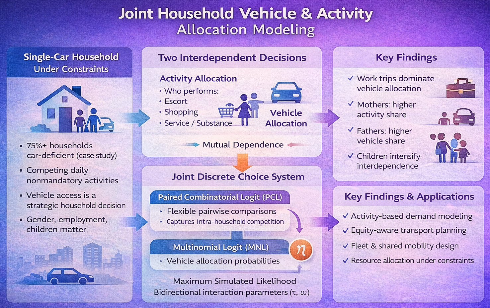

Joint Household Vehicle & Activity Allocation Modeling
This project develops a joint behavioral modeling framework to explain how single-car households allocate both daily activities and vehicle access among family members. In many developing contexts, car-deficient households must negotiate mobility under resource constraints, making vehicle access a strategic household decision rather than an individual one. The project was motivated by the need to move beyond isolated modeling of activity participation or car allocation and instead capture their interdependence. By quantifying intrahousehold dynamics, such as gender roles, employment status, presence of children, and time-of-day constraints, the project provides actionable insights for activity-based demand modeling, equity-sensitive transportation planning, and policy evaluation in constrained mobility environments.
Methodologically, the project introduces a simultaneous joint discrete choice modeling system that integrates a Paired Combinatorial Logit (PCL) model for activity allocation with a Multinomial Logit (MNL) model for vehicle allocation . The PCL structure flexibly captures pairwise comparisons among household members without imposing rigid nesting assumptions, while the MNL component models vehicle assignment probabilities. A shared latent joint component links the two systems, estimated through maximum simulated likelihood using multidimensional integration techniques. Interaction parameters (τ and ω) explicitly quantify bidirectional dependence between activity and car allocation decisions, revealing structural feedback effects rather than mere correlations. The model achieves strong predictive performance (rho-square ≈ 0.397 and robust Theil statistics), demonstrating advanced expertise in flexible discrete choice structures, joint estimation, simulation-based inference, and behavioral system modeling under interdependent constraints.

The joint PCL–MNL modeling system developed in this project provides a transferable framework for analyzing resource allocation under shared constraints, where multiple agents compete for limited assets and decisions are mutually dependent. By structurally linking competing claims through interaction parameters and a shared latent component, the approach can be extended to domains such as fleet management, cloud resource scheduling, workforce shift assignment, inventory distribution, and capital budgeting within organizations. Its strength lies in formally modeling strategic competition and interdependence rather than treating allocation outcomes as independent events, making it highly relevant for operational optimization, shared-platform design, and decision-support systems in complex, resource-constrained environments.
Text ...

Uniqueness
- Text.
- Text.
- Text.
- Text.